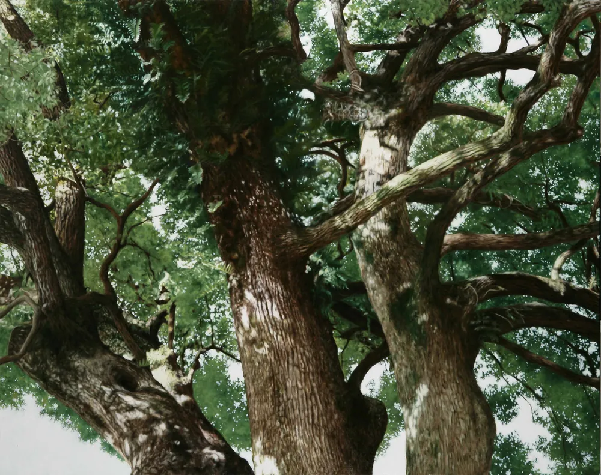
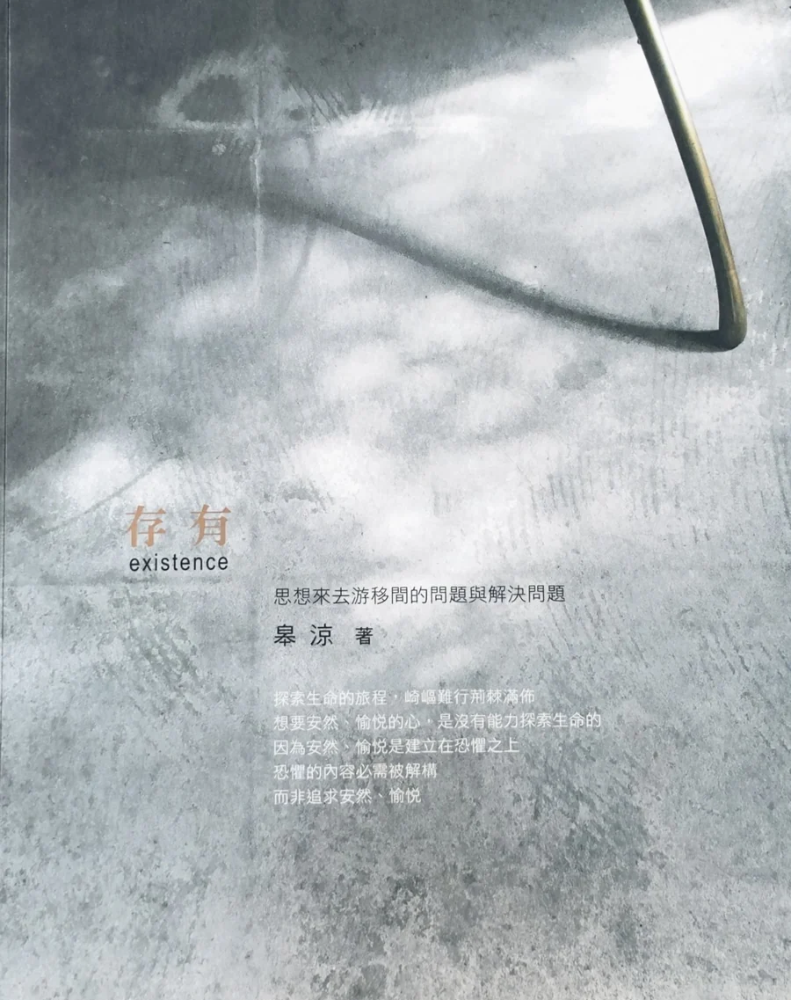

Zhi-Qing Liang


Faites glisser vers la droite, une œuvre à la fois
Collection
Collections partielles
Établi d'après les mentions de collection figurant dans les documents sur les œuvres ; les collectionneurs ne sont indiqués que par leur secteur d'activité.
- Lys jaunes-22012Collectionneurs du secteur des objets d'art
- Guang Bian n° 242017–2018Collectionneur issu de l’industrie traditionnelle
- Ryukin n° 012023Collectionneur issu de l’industrie traditionnelle
 Splendeur millénaire-12012Collectionneur du secteur de l'aménagement foncier
Splendeur millénaire-12012Collectionneur du secteur de l'aménagement foncier
Splendeur millénaire-42012Collectionneur du secteur de l'aménagement foncier Lys orientaux2011Collectionneurs du milieu juridique
Lys orientaux2011Collectionneurs du milieu juridique
Ce n’est pas de moi que vous devriez être curieux, mais de vous-même.Zhi-Qing Liang
Par où commencer
- Depuis combien de temps n’avez-vous pas regardé vraiment une fleur ?Contemplation
 Avez-vous remarqué la lumière aujourd’hui ?Minceur (lumière)
Avez-vous remarqué la lumière aujourd’hui ?Minceur (lumière) Quand vous marchez, qu’est-ce qui vous fait vous arrêter ?En marchant
Quand vous marchez, qu’est-ce qui vous fait vous arrêter ?En marchant Quels sont les deux êtres qui vivent en vous à la fois ?Oscillation
Quels sont les deux êtres qui vivent en vous à la fois ?Oscillation Quand avez-vous le moins besoin de faire semblant ?Vérité
Quand avez-vous le moins besoin de faire semblant ?Vérité
Inutile de répondre. Vous pouvez aussi voir directement toutes les œuvres.
Actualités
Le processus de peinture
Création, vie quotidienne, conférences et entretiens : plusieurs séries de vidéos se trouvent sur la chaîne YouTube, accessibles depuis ici.

Livres de Zhi-Qing Liang
« Être »
Les artistes publient rarement des livres eux-mêmes. Celui qu'il a écrit est présenté ici en particulier : la couverture, le contenu, ainsi que le lancement du livre.
Plus de cent textes courts, sans métaphores, qui demandent directement d'où viennent le désir, l'amour et la vérité.
Voir ce livre sur Eslite en ligne
Présentation du nouveau livre : Eslite Xinyi
Actualités
- 2024ExpositionsSérie Abiogenèse — exposition d’aquarelles et conférence
- 2024ConférencesAu sujet de la peinture (deux conférences, exposition d’aquarelles de la série Abiogenèse)
- 2024ActualitésRti, « Yixiang Shenghuo Meixueguan »｜L’artiste Zhi-Qing Liang parle de sa vie et de sa création (audio radio)
Trente ans de chemin
- 1991–1995Psyché et ÉrosPsyche & Eros21 œuvres
- 1996–1998Scène intérieureInterior Scene34 œuvres
- 1999État du cœurState of Heart99 œuvres
- 2000–2014Réalisme (Zhi Xiang)Realism (Zhi Xiang)12 œuvres
- 2007–2009En marchantTake a Walk37 œuvres
- 2010FluxFlowing20 œuvres
- 2010Nuage, montagne, eauCloud, Mountain, Water3 œuvres
- 2011–2012Fleur — forme et couleurFlower — Form and Colour12 œuvres
- 2012Splendeur millénaireMillennial Splendour4 œuvres
- 2017–2018Guang BianGuang Bian (Light Shift)34 œuvres
- Depuis 2023, en coursRyukinRyukin (working title)1 œuvre
- 2024AbiogenèseAbiogenesis13 œuvres
Trois distances
Loin｜Séries
Prendre du recul et voir tout le mur, série par série. Vous pouvez aussi ne voir que le réalisme, que l’abstraction, ou que les œuvres disponibles sur demande.
Voir les sériesPrès｜L’œuvre seule
Sur la page de n’importe quelle œuvre, choisissez « L’œuvre seule » : l’interface s’efface, il ne reste que le tableau.
Essayer